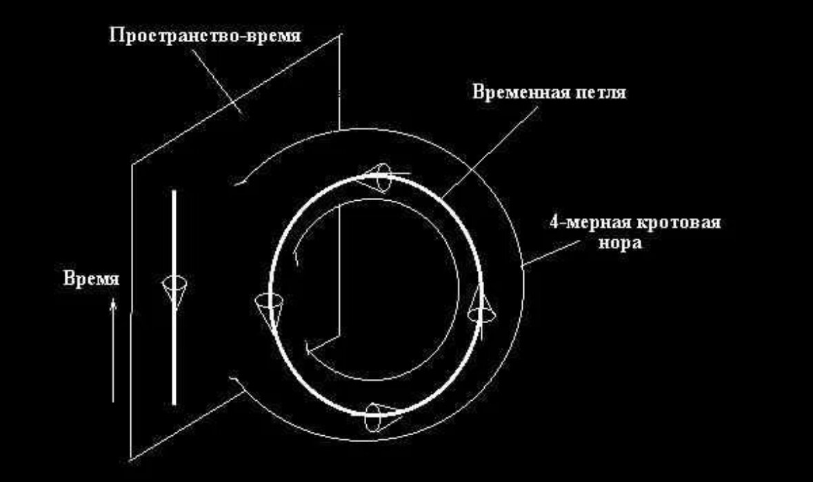

Анекдоты недели
-
"петля" - подумал Штирлиц. В дверь постучали "Временная"

- Что общего между башнями близнецами и гендерами? Раньше их было два, но теперь над ними нельзя шутить
- Что сказал немецкий солдат, когда увидел очередного умершего в концлагере? Дохлый номер.
Недавний контент. Фильм Ширли-мырли
Описание
«Ширли-мырли» (1995) — комедийный фильм начала постсоветской эпохи, снятый Владимиром Меньшовым. В центре сюжета — мошенник, которого преследуют за кражу огромного алмаза. Фильм, помимо прочего, высмеивает шовинизм, антисемитизм и другие проявления межэтнической напряженности в России 1990-х годов.
Посмотреть на ютубеМнение
Одна из лучших комедий, которую я когда-либо видел и один из немногих фильмов 90-х, который мне понравился. Сколько не пересматриваю, всегда открываю для себя что-то смешное в этой картине, поскольку каждый жест, каждое слово, каждый кадр продуманы до мелочей. Не смотреть людям без чувства юмора, поскольку им просто покажется маразмом полным (даже не смотря на то, что в самом начале своего рода дисклеймер фильм-фарс).
Цитаты
Первая
— Я отказываюсь от любых переговоров, пока вы не прекратите дискриминацию граждан цыганской национальности.
— Да кому они нахрен нужны — твои цыгане.
— Вот он, великодержавный шовинизм в действии. Забыли, кто для вас Куликовскую битву выиграл? — Неужто цыгане?
— А этот к нам вообще ненависти не скрывает. Проводит антицыганскую пропаганду среди американского населения.
— А за что вас любить-то? Что вы вообще за нация такая? Где ваши корни?
— Ну конечно, только вы богоизбранный народ, а остальные недочеловеки, гои!
— Кстати, насчет гоев — это вы, евреи, действительно загнули, сами-то что, лучше?
— Ну что ты, братишка, они не лучшие, они единственные, а остальные должны им прислуживать. Но один прокол у них вышел — Христа распяли?!
— Сами породили, сами и распяли! Это наши сугубо еврейские разборки, гоям не понять.
— Ты что, моего Христа в евреи записываешь?!
— А ты как думал, если папа — еврей, мама — еврейка, то ребеночек — русский?
— Папа у него голубь!
Вторая
— Не забывает, как только отсидит — сразу же к маме.
— Хорошего сына воспитала, дай Бог каждому.
Третья
— Да-а, такого случая в истории уголовной России ещё не было…
— Какого именно?
— А что в одном месте собралось сразу шесть м*даков…
Расписание матчей РПЛ (команда Краснодар).
| Число (дата) | Матч | Итоговый счет | Время проведения |
|---|---|---|---|
| 28 | Краснодар - Ростов | - : - | 14:30 |